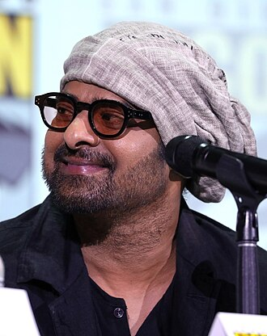
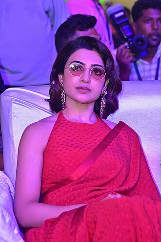

prabhas

This article is about the actor born in 1979. For other uses, see Prabhas (disambiguation). Prabhas Prabhas at the 2023 San Diego Comic-Con Born Uppalapati Venkata Suryanarayana Prabhas Raju[1][2] 23 October 1979 (age 44)[3] Madras, Tamil Nadu, India Education Sri Chaitanya College, Hyderabad (BTech) Occupation Actor Years active 2002–present Works Full list Parent Uppalapati Surya Narayana Raju (father) Relatives Krishnam Raju (uncle) Awards Full list Website www.prabhas.com Uppalapati Venkata Suryanarayana Prabhas Raju ([pɾabʱaːs] born 23 October 1979), known mononymously as Prabhas, is an Indian actor who predominantly works in Telugu cinema.[4] He is one of the highest-paid actors in Indian cinema and has been featured in Forbes India's Celebrity 100 list since 2015.[5][6][7][8] Referred to in the media as the "Rebel Star", he has appeared in over 20 films, and has received seven Filmfare Awards nominations, a Nandi Award, and a SIIMA Award.[9][10] Prabhas made his acting debut with the drama Eeswar (2002), and later attained his breakthrough with the action romance Varsham (2004). He went on to star in other commercially successful films such as Chatrapathi (2005), Bujjigadu (2008), Billa (2009), Darling (2010), Mr. Perfect (2011), and Mirchi (2013), winning the Nandi Award for Best Actor for his performance in the lattermost.[11][12] He went on to play a dual role in the epic action duology Baahubali: The Beginning (2015) and Baahubali 2: The Conclusion (2017), with the latter emerging as the highest-grossing Indian film at that point, establishing Prabhas as the first pan-Indian star.[13][14] After a brief period of decline, he made a career comeback with the action drama Salaar: Part 1 – Ceasefire (2023) and the science fiction film Kalki 2898 AD (2024).[15] Prabhas is the only Indian actor to have six ₹100+ crore opening films worldwide. He is also the only South Indian actor to have six films that crossed the ₹100 crore mark in the Hindi market. Prabhas is the first South Indian actor to receive a wax sculpture at Madame Tussaud's wax museum.[16]
Rakul Preet Singh
Rakul Preet Singh (born 10 October 1990) is an Indian actress who predominantly works in Hindi, Telugu and Tamil films. She has won several awards including a South Indian International Movie Award, in addition to four nominations at the Filmfare Awards South.[1][2] Singh made her acting debut with the Kannada film Gilli (2009). She forayed to Telugu and Tamil cinema with the films Keratam (2011), Thadaiyara Thaakka (2012) and Venkatadri Express (2013). She went on to appear in several films in Tamil and Telugu including Loukyam (2014), Pandaga Chesko (2015), Sarrainodu (2016), Dhruva (2016), Nannaku Prematho (2016), Rarandoi Veduka Chudham (2017), Spyder (2017), Theeran Adhigaaram Ondru (2017), and Ayalaan (2024). Singh entered Hindi cinema with the comedy drama Yaariyan (2014). Since the late 2010s, she has primarily acted in Hindi films, such as the romantic comedy De De Pyaar De (2019), the drama Runway 34 (2022), and the satire Doctor G (2022). Early life Rakul Preet Singh was born on 10 October 1990 in a Punjabi Sikh family in New Delhi,[3][4][5] to Kulwinder Singh, an officer in Indian Army[6] and Rajender Kaur.[7][8] Rakul did her schooling from Army Public School, Dhaula Kuan and later completed a degree in mathematics at Jesus and Mary College.[9][10] Her younger brother, Aman Preet Singh, is set to make his Bollywood debut with film Ram Rajya.[11] Career Debut and early roles (2009–2014) Singh, who said that she had always dreamt of being an actress, began her career in modelling at age 18 while she was still in college.[12] In 2009 she made her acting debut in the Kannada film, Gilli, a remake of Selvaraghavan's 7G Rainbow Colony.[13] She stated that she signed up the film "with the aim to earn a little extra pocket money" and that she was unaware "how big south Indian films were".[13] She won critical acclaim for her role in the film before returning to complete her degree and compete in the 2011 Femina Miss India pageant.[14] Apart from the People's Choice Miss Indiatimes, she won four subtitles at the pageant including Pantaloons Femina Miss Fresh Face, Femina Miss Talented, Femina Miss Beautiful Smile and Femina Miss Beautiful Eyes.[15][16][17] She returned to films in 2011, featuring opposite Siddharth Rajkumar in Keratam which was released both in Telugu and Tamil languages, though critics noted that "she got very little screen time".[18] The film was also made in Tamil simultaneously titled as "Yuvan" with the same cast but different director.[19] In 2012, she appeared in a supporting role in the Tamil film Thadaiyara Thaakka.[20] In January 2013 she appeared in a Tamil film titled Puthagam. In November 2013 she was seen in Venkatadri Express in Telugu, the latter becoming a commercial success[21] and earning her first Best Actress nomination at the 61st Filmfare Awards South.[citation needed] In 2014, she debuted in a starring role in Hindi with Divya Kumar's directorial debut Yaariyan,[22] after which her third Tamil film Yennamo Yedho released. By mid-2014, she was working on three Telugu films simultaneously,[23] which were directed by Sriwass,[24] G. Nageswara Reddy,[25] and Gopichand Malineni. Sriwass's Loukyam and G. Nageswara Reddy's Current Theega were her next releases. She received positive reviews for her performances in both films,[26][27] with 123Telugu claiming that she was "slowly becoming a star actress".[28] She received her second Best Actress nomination at 62nd Filmfare Awards South. Her next released film was Pandaga Chesko in which she was starred opposite Ram Pothineni and directed by Gopichand Malineni.
Ram Charan

For other people named Ram Charan, see Ram Charan (disambiguation). Ram Charan Ram Charan in 2022 Born Konidela Ram Charan[1] 27 March 1985 (age 39) Madras, Tamil Nadu, India Alma mater St. Mary's College, Hyderabad Occupations Actorfilm producer Years active 2007–present Spouse Upasana Kamineni (m. 2012) Children 1 Parent Chiranjeevi (father) Relatives Pawan Kalyan (uncle) Shobana Kamineni (mother-in-law) Allu Arjun (cousin) Family Allu–Konidela family Awards Full list Konidela Ram Charan[1][2] (born 27 March 1985) is an Indian actor and film producer who primarily works in Telugu cinema. He is one of the highest-paid actors in Indian cinema[3][4] and has featured in Forbes India's Celebrity 100 list since 2013. Charan is the recipient of several awards, including three Filmfare Awards and two Nandi Awards. Charan made his acting debut with the action film Chirutha (2007), a box office hit, winning the Filmfare Award for Best Male Debut – South. He rose to prominence starring in S. S. Rajamouli's fantasy action film Magadheera (2009), the highest-grossing Telugu film of all time at the time of its release, winning the Filmfare Award for Best Actor – Telugu. He went on to star in notable films such as Racha (2012), Naayak (2013), Yevadu (2014), Govindudu Andarivadele (2014), and Dhruva (2016). Charan achieved further commercial success with the blockbusters Rangasthalam (2018), winning his second Filmfare Award for Best Actor – Telugu, and RRR (2022), which currently ranks as the third-highest-grossing Indian film of all time and his highest grosser. Charan emerged as a pan-Indian star with RRR and earned international recognition, including a nomination at the Critics' Choice Super Awards for Best Actor in an Action Movie. Charan has also been honoured at Indian Film Festival of Melbourne (IFFM) 2024 for his stellar performance in RRR.[5] In 2016, Charan launched his own production house Konidela Production Company, which has notably backed Khaidi No. 150 (2017) and Sye Raa Narasimha Reddy (2019). Beyond his film career, he owns the polo team Hyderabad Polo and Riding Club and was a co-owner of the airline service TruJet. Early life and family Main article: Allu–Konidela family Ram Charan was born in Madras (now Chennai) in a Telugu family to actor Chiranjeevi and his wife Surekha on 27 March 1985.[6][7] His family hails from Mogalthur and Palakollu in the West Godavari district of Andhra Pradesh.[8][9] His maternal grandfather was the noted comic actor Allu Ramalingaiah.[10] He has two siblings — an older sister Sushmitha and younger sister Sreeja.[11] Ram Charan was educated at Padma Seshadri Bala Bhavan, Chennai,[12] Lawrence School, Lovedale,[13] The Hyderabad Public School, Begumpet,[14] and at the St. Mary's College, Hyderabad.[15] He also attended Kishore Namit Kapoor's acting school in Mumbai.[16][17] He was presented with an honorary doctorate from Vels University, Chennai in April 2024.[18] Acting career 2007–2009: Debut and breakthrough In 2007, Charan made his film debut as the leading actor in Chirutha, an action film directed by Puri Jagannadh which completed 50 days in 178 direct cinemas and 15 other shifted cinemas.[19] He played the role of Charan, an ex-convict seeking to kill his father's murderer. Rediff.com praised his performance, stating: "Ram Charan is quite promising. Dance and action appear to be forte. He is rather graceful in the dance numbers. He also stays clear of any oblique reference to his star father by way of dialogue or adopting any particular mannerism or style."[20] His performance in the film earned him the Filmfare Award for Best Male Debut – South and the Nandi Special Jury Award.[21][22] After the release of his second film, the fantasy film Magadheera (2009), Charan established himself as one of the leading contemporary actors in Tollywood. The film, in which he played dual roles, was directed by S. S. Rajamouli, and Charan's performance was critically acclaimed. The Times of India stated that "Ram Charan returns as a valiant soldier and breathes life into the larger-than-life role with ease. He showcases his horse-riding and dancing skills to perfection."[23] IndiaGlitz commented: "Charan has come up with a mature performance and he has carried the film very well. Both his characters were done justice, and he reminded of his father at many places."[24] Magadheera grossed over ₹150 crores worldwide and held the record of being the highest-grossing Telugu film until 2013 before it was surpassed by Attarintiki Daredi.[25] The film received six Filmfare Awards including two awards – Filmfare Award for Best Actor – Telugu and the Nandi Special Jury Award for Charan.[26]
Samantha

In this Indian name, the name Prabhu is a patronymic, and the person should be referred to by the given name, Samantha. Samantha Ruth Prabhu Samantha in 2023 Born 28 April 1987 (age 37) Madras, Tamil Nadu, India Other names Samantha Akkineni Alma mater Stella Maris College, Chennai Occupation Actress Works Full list Spouse Naga Chaitanya (m. 2017; div. 2021)[1] Awards Full list Signature Samantha Samantha Ruth Prabhu (formerly Akkineni; born 28 April 1987) is an Indian actress who works primarily in Telugu and Tamil films.[2][3] She is the recipient of several accolades, including two Nandi Awards, four Filmfare Awards South, six SIIMA Awards and a Tamil Nadu State Film Award. After a brief stint as a model while pursuing a degree in commerce, Samantha made her acting debut in the Telugu romance film Ye Maaya Chesave (2010), winning the Filmfare Award for Best Female Debut – South. She became the second actress to win both the Filmfare Award for Best Actress – Tamil and Best Actress – Telugu in the same year, for her performances in the 2012 films Neethaane En Ponvasantham and Eega, respectively. Over the next few years, she played the leading lady in top-grossing androcentric films such as Dookudu (2011), Seethamma Vakitlo Sirimalle Chettu (2012), Attarintiki Daredi (2013), Kaththi (2014), Theri (2016), 24 (2016), Mersal (2017), and Rangasthalam (2018). Her performance in A Aa (2016) won Samantha her fourth Filmfare Award, and she gained further praise for her performances in Mahanati (2018), Super Deluxe (2019), and Majili (2019), and the Amazon Prime Video thriller series The Family Man (2021). The last of these earned her a Filmfare OTT Award. In 2023, she had two critical and commercial failures in Shaakuntalam and Kushi.[4][5] Samantha is the founder of a charitable trust Pratyusha Support. Early life Samantha was born on 28 April 1987, her father Joseph Prabhu is Telugu and mother Ninette Prabhu is Malayali.[6] She was born and brought up in the Pallavaram neighborhood of Chennai, Tamil Nadu,[7] as the youngest child of the family, with two elder brothers Jonath and David. She can speak both Tamil and Telugu fluently. [8][9] As a part of her education, Samantha was schooled at Holy Angels Anglo Indian Higher Secondary School and then completed a degree in commerce at Stella Maris College, Chennai.[8][10] Towards the end of her undergraduate degree, she became involved in modelling, notably working with Naidu Hall, through which she was first spotted by filmmaker Ravi Varman.[11] Career Debut, breakthrough and critical acclaim (2010–2012) Samantha began her professional film career with Gautham Vasudev Menon's Telugu film, Ye Maaya Chesave (2010). The film, simultaneously made in Tamil as Vinnaithaandi Varuvaayaa (2010), was highly anticipated prior to release, primarily due to the first time collaboration between Gautham Menon and composer A. R. Rahman.[12] The actress successfully auditioned and was signed up for the project in August 2009. The film was shot in India and the United States, and it was released on 26 February 2010.[13] Post-release, she revealed that Menon played a "crucial part in moulding her as an actress", teaching her how to remain natural and comfortable in front of the screen, even if she had no dialogues in a scene.[14] In the film, Samantha played the lead character Jessie, a Malayali Saint Thomas Christian girl living in Hyderabad, with whom the male protagonist, played by Naga Chaitanya, falls in love. Upon release of the film, Samantha received highly positive reviews for her portrayal, with the film itself garnering widespread critical acclaim.[15] Critics at Sify praised Samantha as a "scene-stealer" and her beauty as "alluring", adding, "she was the girl to watch out for."[15] Jeevi from Idlebrain.com, wrote that "Samantha's debut is one of the best heroine debuts in Telugu cinema" and noted that the "minute expressions she gave spoke volumes about her", whilst labelling the film as a "classic". Her performance in Ye Maaya Chesave earned her first nomination for the Filmfare Award for Best Actress – Telugu and won her the Filmfare Award for Best Female Debut – South and the Nandi Special Jury Award.[16][17][18] Samantha appeared in a cameo role in the Tamil version of the film, portraying an assistant director who becomes an actress.[19] Both the Telugu and the Tamil versions of the films proved to be major successes, propelling Samantha to stardom.[20] She followed up her collaborations with Gautham Menon and A. R. Rahman by appearing in the music video for the World Classical Tamil Conference 2010 promotional song, Semmozhiyaana Thamizh Mozhiyaam, which Menon directed and Rahman composed.[citation needed] Samantha's next release was the romantic drama, Baana Kaathadi (2010), opposite Adharvaa. The film was actually the third Tamil project signed by the actress, but its release preceded the first two that she was contracted for due to delays in their completion.[21][22] Samantha portrayed a student of the National Institute of Fashion Technology (NIFT), the first such role in Tamil cinema.[23] Her next release was Ravi Varman's Moscowin Kavery (2010), originally the first film she began work on. The shooting for the film began in August 2007, with Samantha, then briefly credited with the screen name Yasodha, joining the team later in the year.[24] In an interview held in 2008, Ravi Varman mentioned that he had decided that Samantha would be the lead actress for his film within three minutes after viewing one of her commercial assignments.[11] He went on to describe her as an actress with "intelligence" and "potential", whilst drawing comparisons with the noted actress, Revathi.[11] However, due to Ravi Varman's prior commitments as cinematographer in other projects, the film languished in development hell, eventually releasing in August 2010.[25] The film earned negative reviews from critics, though Samantha's performance was credited as one of the sole highlights that the film offered.[26] In August 2008, while still completing her last three projects, Samantha also signed up to play the lead role of a modern girl in the Narain-starrer, Pookada Ravi, which was later shelved.[27][28] Samantha then went on to feature in Vamsi Paidipally's Telugu film Brindaavanam (2010) in which she played a supporting role alongside NTR Jr and Kajal Aggarwal. Her performance as Indu was well-received despite having a shorter screen time, and the film became her second successful venture in Telugu.[citation needed] Samantha featured in the big-budget Telugu film, Dookudu (2012) alongside Mahesh Babu, which became one of the most successful Telugu films of all time.[29] The film received positive reviews, with a critic from The Times of India stating "Samantha looks beautiful and has done a great job, though her role as Prashanthi isn't too lengthy."[30] She received her second nomination for the Filmfare Award for Best Actress – Telugu for her performance in the film. She also subsequently made guest appearances in two of Gautham Vasudev Menon's films, first in the psychological thriller film, Nadunisi Naaygal (2011) as a mental asylum inmate and then repeated her role from Vinnaithaandi Varuvaayaa in the Hindi version of the film, Ekk Deewana Tha (2012). Her popularity in Telugu films led to Nadunisi Naaygal was dubbed and released in Telugu as Eera Gulabeelu, with Samantha featured prominently on the film's posters, despite only having a guest appearance.[31] During the period, Samantha had also been signed two big-budget projects in Tamil, Mani Ratnam's Kadal (2013) and Shankar's I (2015), but was forced to opt out from both films, since she was suffering from a skin disease and could not work for two months during mid-2012.[32][33][34] Samantha next featured in S. S. Rajamouli's live action Telugu-Tamil bilingual project Eega (2012) alongside Nani and Sudeep, portraying a micro artist who runs a NGO and takes revenge for the murder of her lover.[35] As the film featured a CGI-created housefly as the main character, Samantha noted that she had to use her imagination and act accordingly. She also revealed that many heavy lights were used for the shoot of the film and she subsequently suffered skin burns, calling the process "very stressful" but "satisfying".[36] Titled Naan Ee (2012) in Tamil, the film opened to highly positive reviews and Samantha also won high critical acclaim for her performance. A critic from The Hindu noted "Samantha blooms in the role given to her," while Jeevi of Idlebrain.com wrote her "successful run continues as she portrays the role a bereaved lover with perfection".[37][38] Sify.com also praised her performance in the film, citing her "subtle expressions of love, fear and anxiety work well for the film" and that she "looks beautiful and has performed her role with consummate ease".[39][40] The film went on to become a major commercial success, grossing more than ₹ 1.25 billion, and went on to be dubbed in several foreign and Indian languages.[41][42][43]